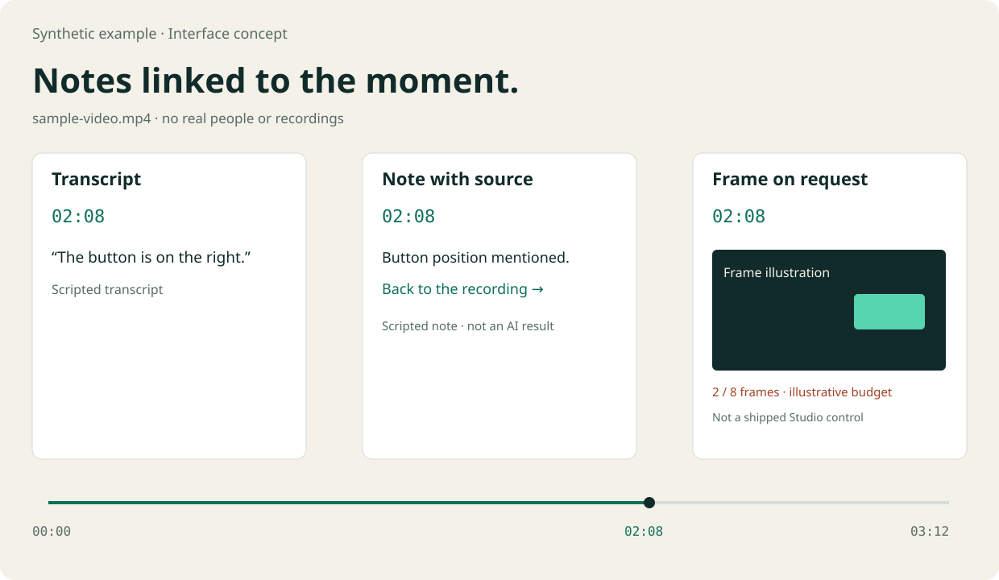
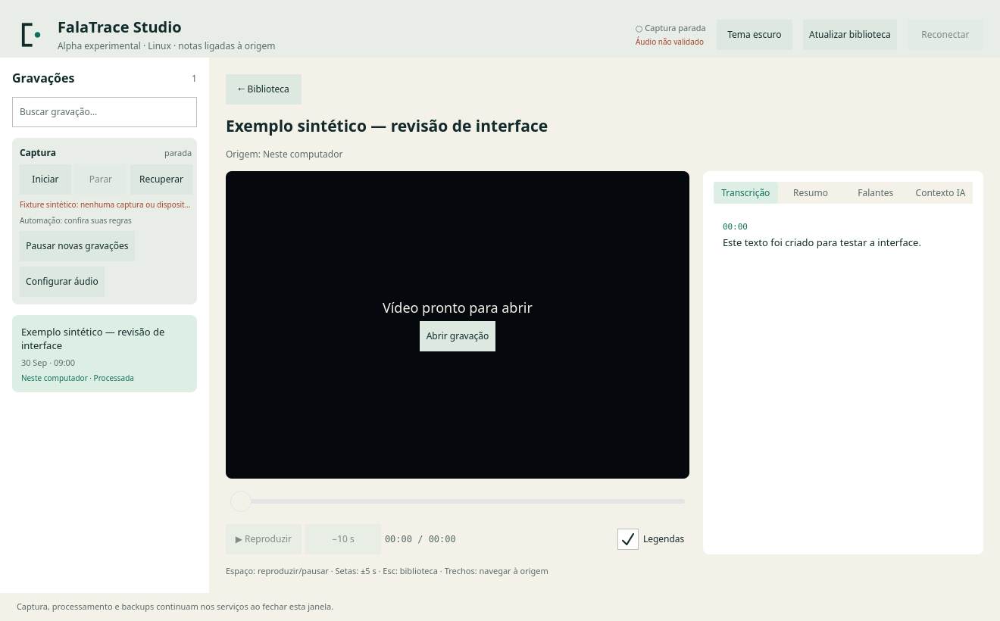
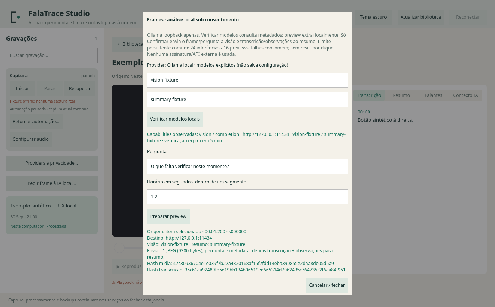
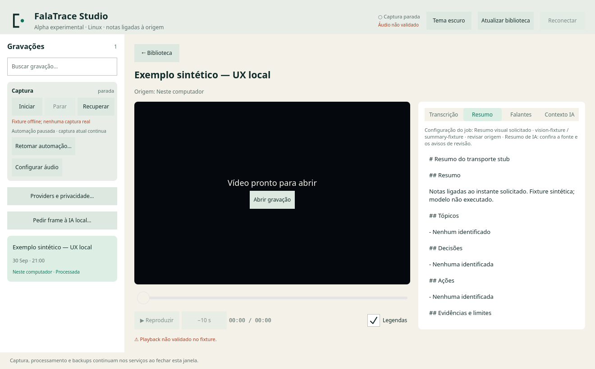

Automação explícita
As regras de detecção são configuráveis. Pause novas gravações pelo comando calls pause; uma captura em andamento continua até você usar record stop. A gravação automática exige configuração e consentimento.
Volte da nota ao momento da conversa. Grave com permissão, consulte a transcrição e escolha as integrações de IA que fazem sentido para você.
Distribuição como código-fonte. Captura nativa e qualidade de modelos reais ainda precisam de validação.
Notas ligadas ao momento.
Back to the recording.
As regras de detecção são configuráveis. Pause novas gravações pelo comando calls pause; uma captura em andamento continua até você usar record stop. A gravação automática exige configuração e consentimento.
Biblioteca, player, transcrição, resumo e contexto no Studio. Horários aproximados e pontos sem evidência exigem revisão; um resumo de IA pode estar errado.
A CLI permite buscar e consultar contexto estruturado. No Studio, escolha modelos locais, confira o preview e autorize o frame e o novo resumo. O caminho usa os adapters de produção; os testes substituem o transporte HTTP. A decisão automática de quando pedir imagens e a qualidade de modelos reais ainda não estão validadas.

Tema claro e escuro, busca, estados explícitos e confirmação antes de iniciar a captura. A interface abaixo foi renderizada pelo Qt com um backend de teste; nenhuma pessoa foi gravada.


Exemplo sintético. O preview local não chama o modelo; a confirmação informa o frame, os modelos e os dados enviados.

Resposta do transporte stub, não prova de qualidade de IA. Observações mantêm timestamp/hash e exigem revisão.
Render offscreen verificado. Reprodução de vídeo, portais de captura, teclado físico e leitores de tela ainda não foram validados nesse ambiente.
Novas configurações selecionam processamento local e desativam o enqueue automático. Whisper.cpp, Ollama e seus modelos precisam ser instalados separadamente. Configurações existentes são preservadas.
OpenAI, Gemini, worker remoto e backups podem transmitir dados quando configurados. Uma assinatura de chat não inclui automaticamente uso de API. Confira o provider e o destino antes de processar.
A remoção local não apaga cópias remotas nem conteúdo já aceito por um provider. A retenção preserva arquivos desconhecidos e falhas; a exclusão invalida a memória derivada antes de alterar artefatos.
Consulte a matriz de jornadas e limites e as instruções atuais no repositório.
Fluxo transcript-first, preview de frames e consentimento explícito com Ollama local. Testado offline com mídia sintética e transportes stub; sem validação de qualidade dos modelos ou melhora de chamadas. Call-light permanece opt-in.
Release alpha.3 ↗ Código-fonte (.tar.gz) · SHA-256
Leia os requisitos, faça a configuração explícita e valide o backend no seu desktop antes de gravar.
Explorar FalaTrace no GitHub ↗